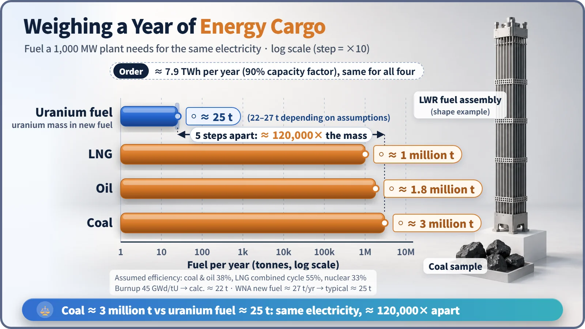
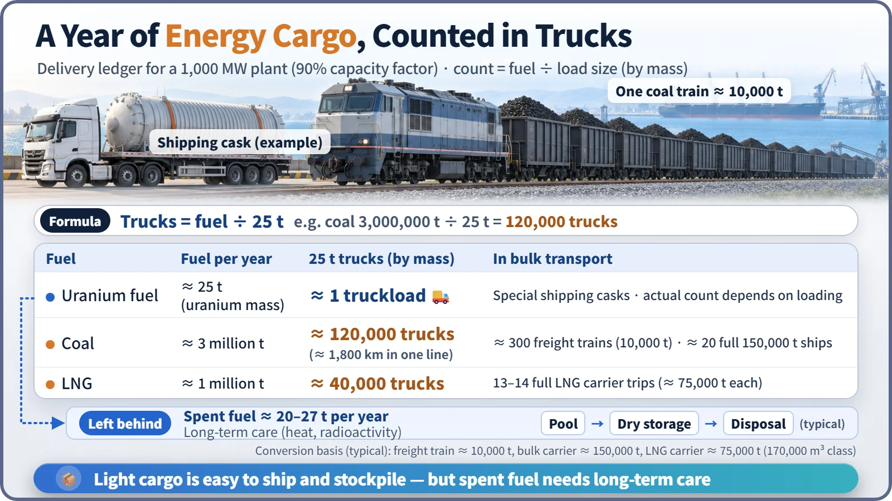

Nuclear Reactions & Fission · 050
One Moving Truck vs 120,000 — Feeling Nuclear Energy Density at Power-Plant Scale
The same year of electricity takes about 120,000 truckloads of coal, or about one truckload of uranium fuel by mass.
A 1,000 MW power plant running for a year needs about 3 million tonnes of coal, or about 25 tonnes of uranium fuel. That roughly 120,000-fold gap in fuel mass is nuclear energy density made tangible: it makes fuel easy to ship and stockpile, while the small amount of spent fuel left over needs long-term management. [1]
One truck or 120,000?
A studio apartment moves in one small van; a big family home needs a convoy of trucks. Now imagine a move where the same one year of cargo takes one 25-tonne truck on one side and 120,000 on the other. The cargo is energy: the fuel a large power plant must haul in to make a year of electricity.
Why such a gap? One paragraph is enough
When coal burns, electrons on the outside of atoms rearrange, and each reaction gives off a few eV (electronvolts). When a uranium nucleus splits, the bonds inside the nucleus rearrange, releasing about 200 MeV in one go, tens of millions of times more. With each reaction in a different weight class, the fuel needed for the same electricity drops dramatically. [2]
Weighing a year's worth of cargo
Take a plant with an electrical output of 1,000 MW running at full output 90% of the time. Its annual generation is about 7.9 TWh, roughly what about 2 million households use in a year if each uses about 300 kWh a month. Working backward from efficiency and each fuel's heating value:
| Fuel | Assumption | Fuel per year |
|---|---|---|
| Coal | 38% efficiency, 25 MJ/kg | about 3 million t |
| Oil | 38% efficiency | about 1.8 million t |
| LNG | 55% combined-cycle efficiency | about 1 million t |
| Uranium fuel (LWR, low-enriched) | by uranium mass | about 22–27 t |
The World Nuclear Association also gives about 27 tonnes as the new fuel a 1,000 MW reactor uses each year. Compared with coal, that's roughly 120,000 times less. [1]

Why only about 120,000 times, when the theoretical one-gram comparison gives millions? Because the fuel isn't burned all the way. Light-water reactor fuel contains only 3–5% uranium-235, and after a few years in the reactor it comes out with only part of its heavy atoms split. To be fair, making those 27 tonnes also takes about 200 tonnes of uranium concentrate (yellowcake) from the mine. Even counting that, there's no comparison with 3 million tonnes of coal.
Count it in trucks
The formula is simple: number of trucks = fuel mass ÷ 25 tonnes. Three million tonnes of coal is about 120,000 trucks, about 330 a day through the plant gate. At roughly 15 m per truck, they would stretch about 1,800 km nose to tail, more than two round trips on South Korea's Seoul–Busan expressway. In 10,000-tonne coal trains that is about 300 trains a year, nearly one a day; South Korea imports its coal by sea, so a 150,000-tonne bulk carrier would arrive fully loaded about 20 times a year. One million tonnes of LNG is 13–14 full LNG carrier voyages.
Twenty-five tonnes of uranium fuel is one truckload by mass. In reality the roughly 4-meter-long fuel assemblies travel in rugged, purpose-built casks, so the truck count goes up with loading conditions, but the gap between tens of thousands and a handful stays the same.

Light cargo means a small warehouse
The gap feeds directly into energy security. A South Korean nuclear plant runs about 18 months on one load of fuel, replacing only part of it at refueling, and the small volume makes stockpiling several years' worth relatively easy. That means a longer buffer if sea lanes are disrupted, which is why the Korean government classifies nuclear power as a "quasi-domestic" energy source. Coal and LNG need a constant stream of ships and huge storage facilities. Uranium, too, relies heavily on overseas supply chains, from mining to enrichment to fabrication. [3]
What comes in, partly goes out
Each year a 1,000 MW nuclear plant discharges about 20–27 tonnes of spent fuel. The quantity is small, but it is intensely radioactive and hot, so it is cooled in a pool, moved to dry storage, and ultimately needs very long-term management such as deep underground disposal. South Korea set out that process in its 2025 special act on high-level radioactive waste management. Fossil fuels scatter as carbon dioxide and ash; nuclear fuel remains behind, small and solid. [1]
Key takeaways
High energy density means making the same electricity with far less fuel: about 3 million tonnes of coal versus about 25 tonnes of uranium fuel per year, or 120,000 trucks versus one truckload. Transport and stockpiling become light, but the spent fuel must be managed responsibly for a long time. High density by itself does not mean danger; extracting the energy safely is the job of reactor design and operation.